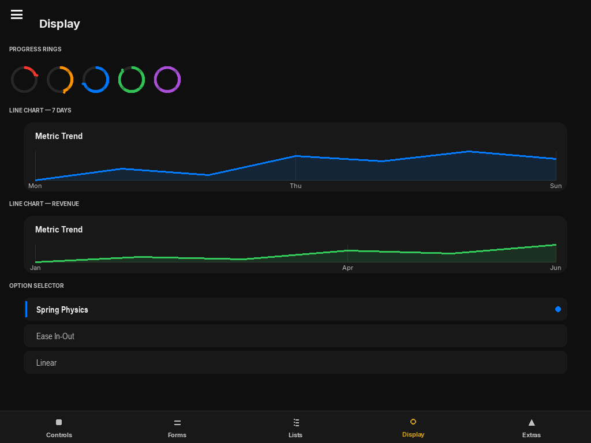

Display Widgets
Non-interactive display elements: Label, ProgressBar, ProgressRing, LineChart, CodeViewer, Divider, Badge, Avatar, Card, ListItem, EmptyState.

Label
Label(
text: str | State,
font_size=16,
font_name="Arial",
color=None, # defaults to iOSTheme.label
bold=False,
wrap_width=None, # None = single line; int = word-wrap at this pixel width
anchor="top_left", x=0, y=0, width=100, height=30,
)Pass a State object as text and the label updates automatically whenever the state changes. The value is converted to string via str().
from pylay import Label, State
score = State(0)
lbl = Label(score, font_size=32, bold=True,
anchor="top_left", x=0, y=0, width=1.0, height=56)
# Long text with wrapping:
desc = Label(
"This is a long description that will wrap at 400 pixels.",
wrap_width=400,
color=iOSTheme.secondary_label,
anchor="top_left", x=0, y=0, width=1.0, height=80,
)ProgressBar
ProgressBar(
progress: float | State = 0.0, # 0.0 to 1.0
anchor="top_left", x=0, y=0, width=200, height=8,
active_color=None, # defaults to ColorPalette.BLUE
)Animates the fill from its current position to the target value. When progress is a State, the bar tracks it automatically.
lesson_progress = State(0.0)
bar = ProgressBar(progress=lesson_progress,
active_color=ColorPalette.GREEN,
anchor="top_left", x=0, y=0, width=1.0, height=6)
# Update progress:
lesson_progress.value = notes_correct / notes_totalLineChart
LineChart(
data: list[float],
labels: list[str] | None = None,
active_color=None,
title="Metric Trend",
anchor="top_left", x=0, y=0, width=400, height=220,
)Renders a line chart that morphs up from zero on load using a spring animation. An interactive tooltip tracks the mouse along the line and displays the exact value at that position. X-axis labels (if provided) appear below the chart.
from pylay import LineChart, ColorPalette
chart = LineChart(
data=[42, 58, 61, 74, 88, 79, 95],
labels=["Mon", "Tue", "Wed", "Thu", "Fri", "Sat", "Sun"],
active_color=ColorPalette.TEAL,
title="Weekly Accuracy (%)",
anchor="top_left", x=0, y=0, width=1.0, height=240,
)CodeViewer
CodeViewer(
code_text: str | State,
anchor="top_left", x=0, y=0, width=500, height=300,
)A scrollable Python code display with syntax highlighting (keywords, strings, numbers, comments) and a gutter with line numbers. Useful for displaying lesson code or error messages. Pass a State to update the displayed code dynamically.
from pylay import CodeViewer, State
code = State("# Your code here\nprint('Hello, world!')")
viewer = CodeViewer(
code_text=code,
anchor="top_left", x=0, y=0, width=1.0, height=0.6,
)
# Update dynamically:
code.set("def greet(name):\n print(f'Hello, {name}!')")ProgressRing
ProgressRing(
progress: float, # 0.0 – 1.0
size: int = 48,
active_color: pygame.Color | None = None, # defaults to ColorPalette.BLUE
stroke: int = 5,
)Circular progress indicator with supersampled anti-aliasing. Renders a thin ring arc from the top, sweeping clockwise. Caches the rendered surface — only redraws on value or size change.
from pylay import ProgressRing, ColorPalette
ring = ProgressRing(
progress=0.72,
size=64,
active_color=ColorPalette.GREEN,
stroke=6,
anchor="center", x=0, y=0,
)Divider
Divider(
width: int | float = 1.0, # fraction of parent or fixed px
)A 1 px horizontal line in iOSTheme.fill_tertiary. Used to visually separate groups inside a VStack or Card.
from pylay import VStack, Label, Divider
col = VStack(spacing=0, padding=12, width=1.0, height=200)
col.add_child(Label("Section A", font_size=14))
col.add_child(Divider())
col.add_child(Label("Section B", font_size=14))Badge
Badge(
text: str,
color: pygame.Color,
icon: str = "", # emoji character (alternative to icon_fn)
icon_fn: Callable | None = None,
icon_size: int = 18,
font_size: int = 13,
height: int = 34,
width: int | None = None, # auto-sized from text length if None
text_color: pygame.Color | None = None, # defaults to white
border_radius: int | None = None, # defaults to height // 2 (pill shape)
)Coloured pill label — used for difficulty tags, status chips, and count indicators. Width is automatically derived from text length when not specified.
from pylay import Badge, ColorPalette
Badge("Beginner", ColorPalette.GREEN, anchor="top_left", x=0, y=0)
Badge("Advanced", ColorPalette.RED, anchor="top_left", x=0, y=0)
# With emoji icon:
Badge("🎵 4 Songs", ColorPalette.BLUE, icon="🎵",
anchor="top_left", x=0, y=0)Avatar
Avatar(
initials: str, # up to 2 characters displayed; auto-uppercased
size: int = 40,
color: pygame.Color | None = None, # circle fill; defaults to ColorPalette.BLUE
)Circular avatar that renders up to two initials in white on a coloured circle. Font size scales proportionally to size.
from pylay import Avatar, ColorPalette
Avatar("MA", size=48, color=ColorPalette.PURPLE,
anchor="top_left", x=16, y=16)Card
Card(
spacing: int = 8,
padding: int = 14,
border_radius: int = 12,
# All VStack / UIElement kwargs are accepted (width, height, anchor, x, y, …)
)A VStack with a rounded iOSTheme.secondary_background fill — the standard container for grouped content. Add children with add_child().
from pylay import Card, Label, Divider, Switch, State
notifications = State(True)
card = Card(anchor="top_left", x=16, y=16, width=1.0)
card.add_child(Label("Notifications", font_size=15))
card.add_child(Divider())
card.add_child(Switch(state=notifications, anchor="left", x=0, y=0))ListItem
ListItem(
title: str,
subtitle: str = "",
leading=None, # UIElement placed on the left edge
trailing=None, # UIElement placed on the right edge
on_click: Callable | None = None,
height: int = 52,
title_size: int = 14,
leading_width: int = 36,
width: int | float = 1.0,
background_color: pygame.Color | None = None,
border_radius: int = 10,
)A standard list row with an optional title, subtitle, leading widget (icon/avatar), and trailing widget (badge/chevron). When on_click is provided, a transparent tap-target button covers the whole row.
from pylay import ListItem, Icon, Badge, ColorPalette
item = ListItem(
title="Bach — Prelude in C",
subtitle="Easy · 2 min",
leading=Icon("music_note", size=20, anchor="center", x=0, y=0),
trailing=Badge("New", ColorPalette.BLUE, height=24, font_size=11),
on_click=lambda: open_song("bach_prelude"),
anchor="top_left", x=0, y=0,
)EmptyState
EmptyState(
icon: str, # emoji character
title: str,
subtitle: str = "",
icon_size: int = 48,
# Defaults to width=1.0, height=1.0 (fills parent)
)Centred placeholder shown when a list or page has no content. Renders an emoji, a bold title, and an optional subtitle line, all centred in the available space.
from pylay import EmptyState
placeholder = EmptyState(
icon="🎵",
title="No songs yet",
subtitle="Import a MusicXML file to get started.",
anchor="top_left", x=0, y=0, width=1.0, height=1.0,
)